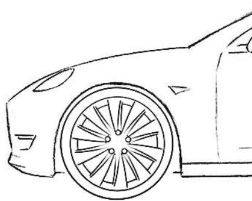

Auto Nuoma

AUTOCOM – bendražygiai Jūsų kelyje! Kartu su AUTOCOM automobiliu leiskitės į patogią, saugią ir itin malonią kelionę.
Taupome jūsų brangų laiką, todėl automobilio nuomos rezervaciją galite atlikti itin paprastai, neišvykus iš savo namų: mūsų internetinėje svetainėje arba mobiliojoje programėlėje AUTOCOM GO.
Atsisakėme popierinių sutarčių – viskas dėl jūsų patogumo ir brangaus laiko taupymo.
Nuolat atnaujiname automobilių pasiūlą bei nuomojame tik naujausius, ne senesnius nei 3-jų metų automobilius.
Mūsų komanda domisi naujausiomis technologijomis bei myli automobilius, todėl kiekvieną automobilį prižiūrime kaip savo.
Visi automobiliai itin švarūs bei techniškai tvarkingi. Nuomos pasiūlą pritaikėme prie jūsų poreikių – galite pasirinkti iš ekonominės, kompaktinės, vidutinės, standartinės, SUV ir miniveno klasių lengvųjų automobilių.
Taip pat siūlome keleivinių ir krovininių mikroautobusų nuomą.